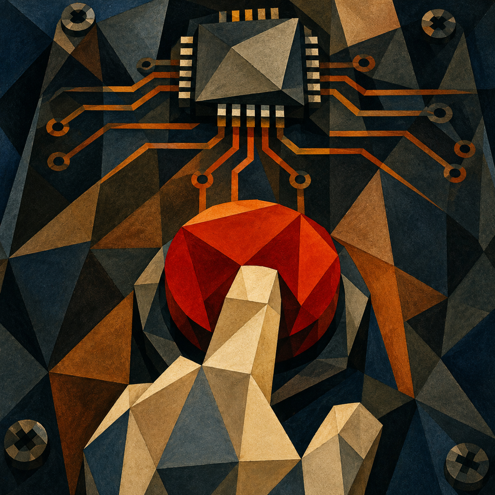

btn
Portable, HAL-agnostic button debounce library in C. Supports short click, double click, long press and hold-repeat events. Includes a ready-to-use STM32 HAL port. Zero dynamic allocation.
1
1 fork